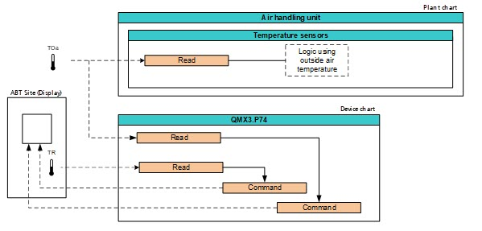

配置 QMX3 房间操作单元的显示视图
设备图表显示并控制相应的房间操作QMX3。首先使用库中的设备图表。可以或必须创建工厂图表和设备图表之间的对象引用以获得完整功能。
设备图表的配置分为四个步骤：
- Configuration in the KNX PL-Link area.
- Modification of the chart in the device chart.
- Modification of the chart in the plant chart.
- Creation of links from the device chart to the plant chart.

- The KNX PL-Link devices are configured.
- Go to Building > Building structure.
- Right-click a configured PXC4/5/7 and select Go to engineering.
- Select the Configuration tab on the right.
- In the KNX PL-Link area, select the feature to be configured, for example Temperature.
- In the section Display, select the property to be configured, for example, Temperature display.
- In the Temperature display drop-down list, select one of the options:
- None
- Display room temperature
- Display outside air temperature
- Display room & outside air temperature - Repeat these steps for all features.
- The display view of the room operation unit is configured an visible in the device chart
- Create links between device chart and plant chart for the values to display on the room operation unit display.

如果使用预定义选项，则无需调整设备图表中的 BACnet 对象。这是自动发生的。